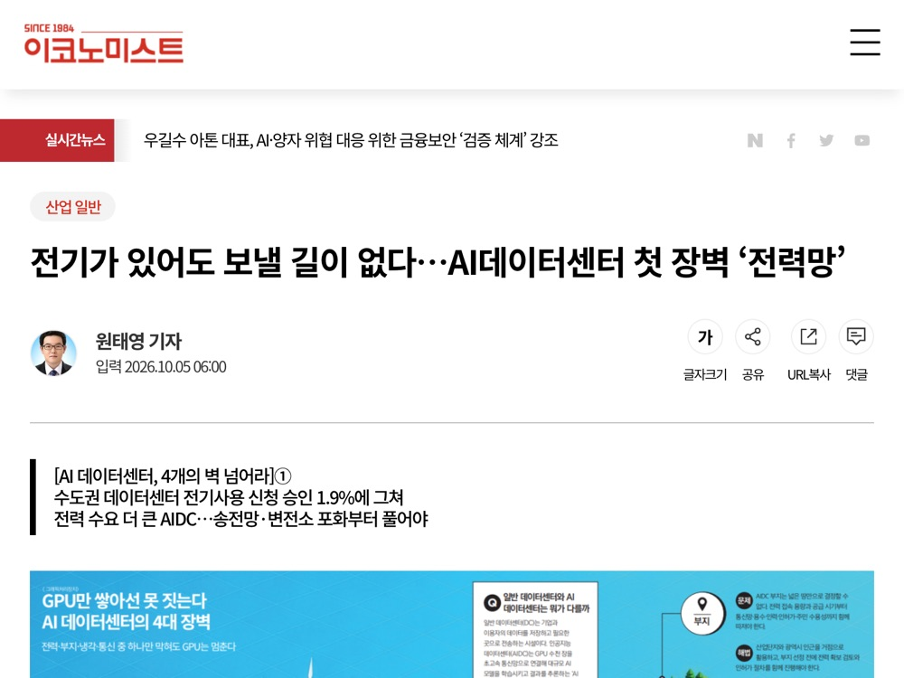

AI 시대 한국 경제의 세 쏠림, 함께 푸는 열쇠는 지방 AI 데이터센터
- 1 / 7
AI 시대, 한국 경제가 통째로 멈출 수 있다고?
한국 경제는 세 곳에 기대고 있어요. 반도체 수출, 미국의 연산력, 수도권이에요.
한 곳이 막히면 전부 멈출 수 있어요.
관세청 · Epoch AI · 이코노미스트
- 2 / 7
166억 달러반도체
11월 1~10일 수출액이에요(관세청 잠정치).
쏠림 ① 수출 절반이 반도체 하나
11월 1~10일 수출 335억 달러 중 166억 달러가 반도체였어요. 반도체 경기가 꺾이면 수출 전체가 흔들려요.
수출이 한 품목에 기대고 있어요.
관세청 11월 11일 잠정치
- 3 / 7
74.5%미국
Epoch AI가 추적한 AI 슈퍼컴퓨터 성능의 나라별 비중이에요.
쏠림 ② AI 연산력 4분의 3은 미국에
전 세계 AI 슈퍼컴퓨터 성능의 74.5%가 미국에 있어요. 한국은 AI를 돌릴 힘을 빌려 쓰는 쪽이에요.
빌려 쓰면 끊길 때 대안이 없어요.
Epoch AI(2025년 5월)
- 4 / 7

이코노미스트
쏠림 ③ 데이터센터마저 수도권으로
데이터센터 전기 사용 신청 736건 중 522건이 수도권이었어요. 사람도 산업도 몰린 곳에 새 산업까지 몰려요.
지역 격차가 AI 시대에 더 벌어져요.
이코노미스트
- 5 / 7
세 쏠림을 함께 푸는 열쇠, AI 데이터센터
직접 지으면 빌려 쓰던 연산력이 우리 자산이 돼요. 변압기 · 냉각 · 건설 · 운영까지 여러 산업이 같이 움직이고, 지방에 지으면 일자리가 지역에 남아요.
미국 의존 · 반도체 쏠림 · 수도권 쏠림을 한 번에 줄여요.
편집 정리(쏠림 ①②③과 짝)
- 6 / 7
89.7%비수도권
데이터센터 전기 공급 본심사 통과율이에요.
지을 곳은 지방, 전기가 열려 있다
수도권은 전기 신청 522건 중 최종 승인이 10건뿐이에요. 비수도권 본심사는 29건 중 26건(89.7%)이 통과했어요.
전기 사정도 지방에 짓는 쪽을 거들어요.
이코노미스트 · 머니투데이
- 7 / 7
머니투데이
남은 숙제는 고객
응답 속도가 중요한 추론용 센터는 쓰는 사람 가까이 있어야 해요. 그래서 학습용 센터부터 지방으로 가는 순서가 현실적이에요.
열쇠가 돌려면 수요도 지방으로 가야 해요.
머니투데이
이 소식이 뜻하는 것
- 원리
- AI 데이터센터 하나가 세 쏠림을 함께 완화해요. 연산력은 자산으로, 산업은 반도체 밖으로, 일자리는 지방으로요.
- 해석
- 전기 데이터가 이 해법의 근거예요. 수도권은 신청 522건 중 10건만 전기를 받아 지방 말고는 지을 곳이 마땅치 않아요.
- 아직 모름
- 한 곳 「3조 5천억 원 효과」와 「6월 3주 접속 차단」은 원출처를 찾지 못했어요.
우리 팀에게는
알아 둘 흐름. 숫자를 옮길 땐 원출처부터 확인한다.
- 카드뉴스 숫자는 AI에게 원출처 표부터 만들게 한다.